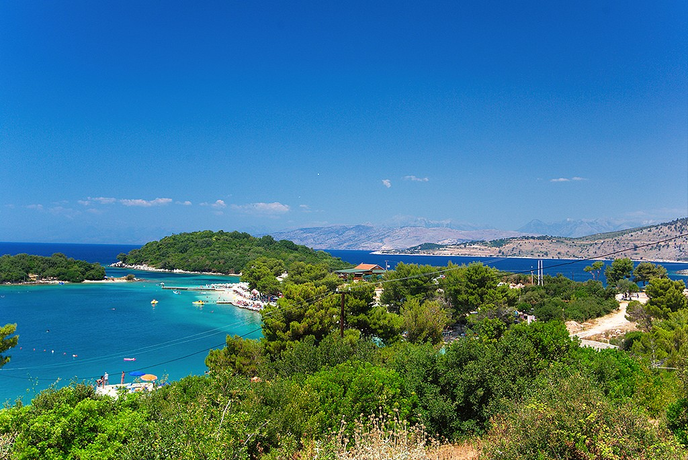
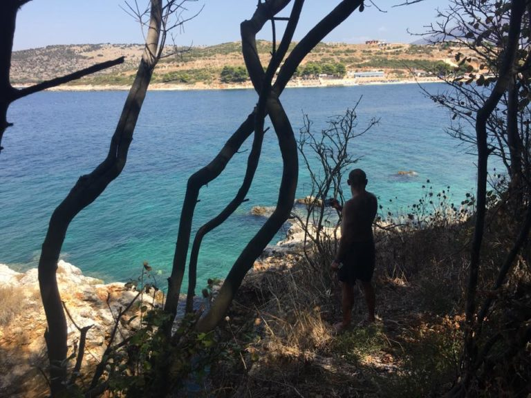
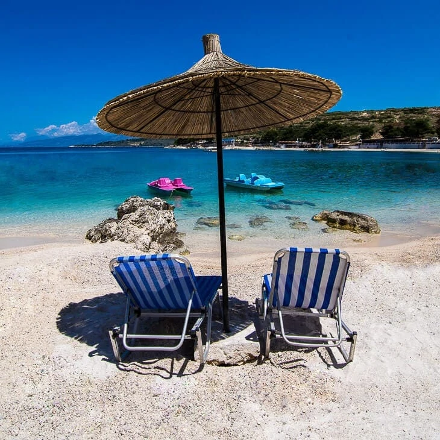

Ksamil is a village and a former municipality in the riviera of Southern Albania, and part of Butrint National Park. At the 2015 local government reform it became a subdivision of the municipality Sarandë.The population at the 2011 census was 2,994.The municipal unit consists of the villages Ksamil and Manastir. During the communist era, the coastal village of Ksamil was built in 1966 and is located south of the city of Sarandë off the road to Butrint. Ksamil is one of the most frequented coastal resorts by both domestic and foreign tourists. Ksamil Beach and Albania's Ionian Coast further north was included in the Guardian's 20 of the best bargain beach holidays for 2013. The main attractions are the nearby Ksamil Islands. The mainland beach is small but clean. During communism, the area became well known for the production of olive oil, lemons, and tangerines. In 2010, national authorities demolished over 200 illegal structures that violated the town's master plan and the integrity of Butrint National Park. Some remains from the demolished buildings have yet to be removed by authorities.
The history of Ksamil as a city can be said to have started in the `70s of the last century, during the communist regime when hundreds of families, volunteer youth but also people persecuted by the communist regime, began to open new lands that were planted mainly with olives and citrus, turning Ksamil into a real gem. Today ten-year-old trees adorn the town and do a great service to tourism, creating a wonderful Mediterranean atmosphere. In the 1990s, Ksamili had at least 3,500 inhabitants who had come from Saranda, Gjirokastra, Përmeti, Korça, Kukës and Peshkopia and who had become permanent residents after the construction of the town in the 1970s.
Map's Bay - Ksamili starts from where it is called Map's Bay and we can say that the first beach we suggest is the Bay of Map, A large and wide beach where services are offered, bar and restaurant, sailing boats and some small plastic trampolines. Beaches in front of the Islands - There are a series of small and very beautiful beaches, which all see in front of the islands. Each of them, in addition to services, also offers boats or kayaks, with which the islands can be visited. Dry Tree - It is a very beautiful and quite frequented beach overlooking Corfu and is only half a mile away. Although it is difficult to find shallow beaches in Ksamil, this is one of the beaches with the shallowest depth of the coast, which makes it chosen by many families with small children. Mirrors Beach - Although we have offered it on the beaches of Saranda, this beach belongs to Ksamil. It is located on the road from Saranda to Ksamil and is a beach with crystal clear and calm waters that constantly reflect the sky. That is why many fishermen in the area have called it that. Seagull Beach - It is said that once a seagull had its nest there and the locals who often went there named it after it. Now the beach, one km away from the main road is densely populated with tourists, from May to the end of September. But there are many other smaller beaches, located along the coastline, that are gradually taking place in the daily lives of those who discuss vacation, such as Cape Merley, a very intimate and unknown beach, where a tourist complex is being set up. very modern, to enable those who want to relax away from the influx of people's attention.
Thank you for reading this article! Leave a like or dislike.